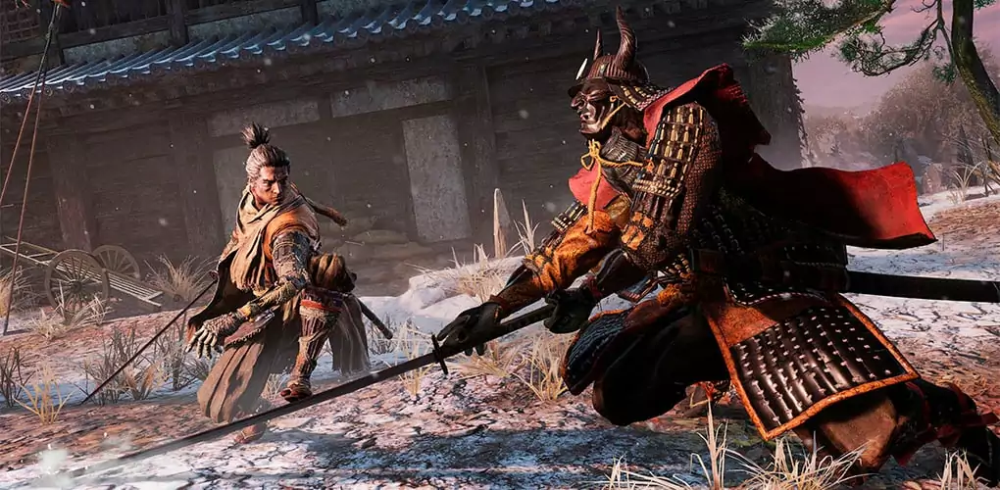
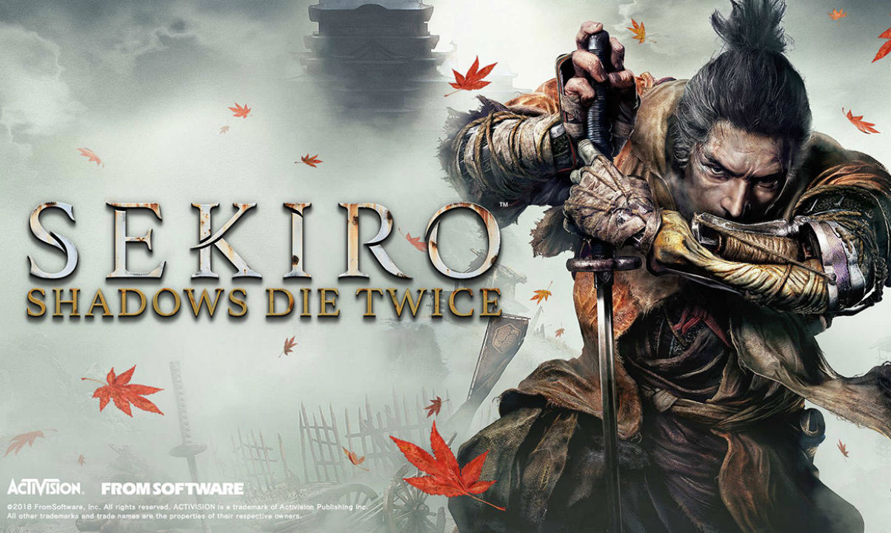
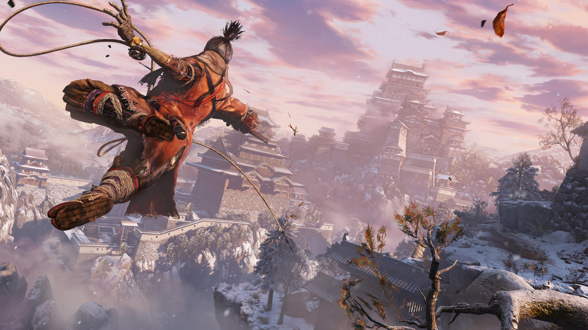
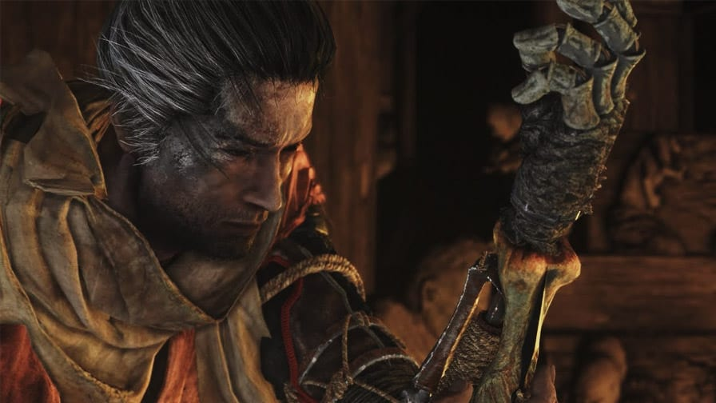

Ambientado no crepúsculo da era Sengoku no Japão, você encarna o "Lobo de um Braço Só", um shinobi desfigurado incumbido de proteger um jovem senhor de uma linhagem ancestral.Sekiro redefine o combate de ação ao substituir a barra de vida tradicional pelo sistema de "Postura", onde cada duelo é uma dança letal de defesas precisas e contra-ataques sonoros. Utilize sua prótese shinobi multifuncional para explorar ambientes verticais com o gancho e surpreender inimigos com ferramentas ninjas. Em um mundo onde a morte não é o fim, mas sim uma ferramenta estratégica, você deverá enfrentar o clã Ashina para restaurar sua honra e quebrar o ciclo de imortalidade.